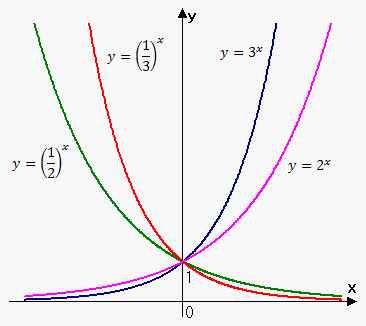
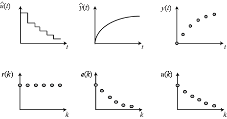
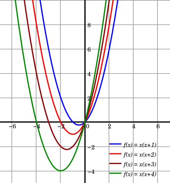

Function
go to the bottum
Exponential Function
Exponential Functions and their relations to Natural Logarithms. ln (x) and ex are inverses of each other. We can see from the graph below because they mirror each other across the line y = x. (0,1) on ex corresponds to its inverse of (1,0) on ln(x).

The content of Exponential Function:
- 1.1 The Nature of Exponential Growth
- 1.2 Exponential Decay: Connecting to Negative Exponents
- 1.3 Rational Exponents
- 1.4 Properties of Exponential Function
- 1.5 Transformations of Exponential Function
By the end of this chapter,you will be able to:
- Describe the characteristics of exponential functions and their graphs
- Compare exponential functions with linear quadratic functions
- Evaluate powers with integer and rational exponents and simplify expressions that involve them
- Use exponential functions to solve problems with exponential growth and decay
The study video for Exponential Function
Trigonometric Function
In mathematics, the trigonometric functions (also called the circular functions) are functions of an angle. They relate the angles of a triangle to the lengths of its sides. Trigonometric functions are important in the study of triangles and modeling periodic phenomena, among many other applications.

The content of Trigonometric Function:
- 2.1 Modelling Periodic Behaviour
- 2.2 The Sine Function and the Cosione Function
- 2.3 Investigate Transformations of Sine and Cosine Functions
- 2.4 Graphing and Modelling
- 2.5 Data Collecting and Modelling
By the end of this chapter, you will be able to:
- Relate the six trigonometric ratios to the unit circle
- Solve real-life problems by using trigonometric ratios, properties of triangles, and the sine and cosine laws
- Prove simple trigonometric identities
The study video for Trigonometric Function
Discrete Function
A continuous function allows the x-values to be any points in the interval, including fractions, decimals, and irrational values. A discrete function allows the x-values to be only certain points in the interval, usually only integers or whole numbers. Graph the continuous function: y = x2 for all Real numbers.

The content of Discrete Function:
- 3.1 Sequences as Discrete Function
- 3.2 Recursive Procedures
- 3.3 Pascal's Triangle and Expanding Binomial Powers
- 3.4 Arithmetic Sequences
- 3.5 Geometric Sequences
By the end of this chapter,you will be able to:
- Identify and classify sequences
- Create functions for describing sequences and use the sequences to make predictions
- Investigate efficient ways to add the terms of a sequence
- Model real-life problems using sequences
The study video for Discrete Function
Quadratic Function
A quadratic function havs a form of f(x) = ax2 + bx + c, where a, b, and c are non-zero numbers. The graph of a quadratic function is a curve called a parabola. Parabolas may open upward or downward and vary in "width" or "steepness", but they all have the same basic "U" shape.

The content of Quadratic Function:
- 4.1 Properties of Quadratic Function
- 4.2 Determing Maximum and Minimum Values of a Quadratic Function
- 4.3 The Inverse of a Quadratic Function
- 4.4 Operations with Radicals
- 4.5 Quadratic Function Models: Sloving Quadratic Equations
By the end of this chapter, you will be able to:
- Graph and analyze the properties of quadratic functions
- Determine the zeros of quadratic functions
- Calculate the maximum or minimum vales of quadratic functions
- Solve problems involving quadratic functions
The study video for Quadratic Function
Citation
- Exponential function graph. (n.d.). Retrieved February 22, 2017, from https://www.khanacademy.org/math/algebra/introduction-to-exponential-functions/graphs-of-basic-exponential-functions/v/graphing-exponential-functions"
- Unit circle. (n.d.). Retrieved February 22, 2017, from https://www.khanacademy.org/math/algebra2/trig-functions/unit-circle-definition-of-trig-functions-alg2/v/unit-circle-definition-of-trig-functions-1"
- C. (2008, September 22). Qualities of Leadership - Inspirational Leadership Quotes. Retrieved February 22, 2017, from http://www.youtube.com/watch?v=UhxINyIZ454
- Graphing parabolas intro. (n.d.). Retrieved February 22, 2017, from https://www.khanacademy.org/math/algebra/quadratics/graphing-quadratic-functions/v/graphing-a-quadratic-function
- Exponential_Function - Google Search. (n.d.). Retrieved February 22, 2017, from https://www.google.ca/search?q=Exponential%2BFunction&safe=strict&espv=2&biw=1040&bih=878&source=lnms&tbm=isch&sa=X&ved=0ahUKEwjpspSxjqTSAhVDjVQKHRJjBtUQ_AUIBigB#imgrc=7-JwOx-M465i-M:
go back to the top